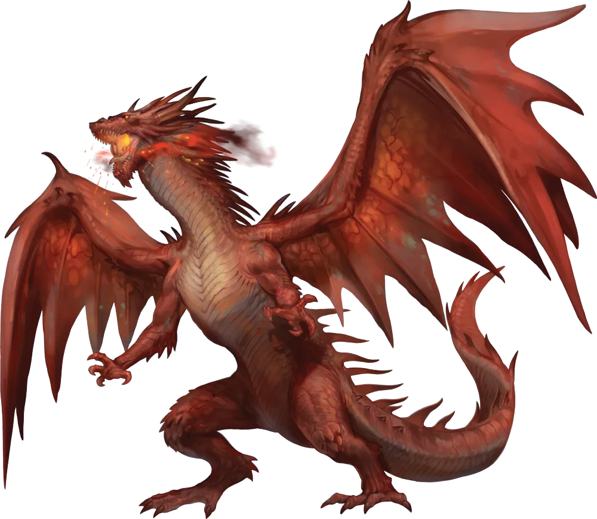

各年龄段数据卡
红龙因许多特质而闻名于世――喷吐烈焰的威能、深不见底的邪恶本性、对财宝的贪婪挚爱――但真正让红龙在龙族中独树一帜的，或许还是它们那近乎无边无际的自负。哪怕在龙族内部，红龙也被视作令人难以忍受的傲慢名伶，永远不知疲倦地吹嘘自己凌驾于一切其他巨龙之上的优越地位。太古红龙在这一共性上自然也不例外。尽管红龙之间极少往来，可一旦两头红龙狭路相逢，它们便会毫不相让地向对方宣示自己的高人一等。这种互相吹嘘、争强斗胜的较劲有时能一连持续数日乃至数周，甚至让红龙们彻底沉迷于自我吹捧之中，把当初见面的原本目的忘得一干二净。 太古红龙是行走（或翱翔）的天灾，是活生生的浩劫化身――只需掠过时随口喷出一道火焰吐息，便能在身后留下一片焦黑荒原。而那片烈焰升腾、浓烟滚滚的惨烈灾景，正是区分真正的太古红龙与尚未登临力量绝顶的远古红龙或古龙的绝佳标志：请留意巨龙吐息落下之后的那一刻。倘若烈焰将万物烧成灰烬后便自行熄灭，那多半还不是一头太古龙；唯有经久不息的余焰与浓烟，才是真正太古红龙的标志。 与其他红龙相比，太古红龙也更倾向于将自身操控烈焰的威能转化为统御其他火属性生物的领袖权柄。诚然，即便是远古红龙也能强行夺取他人的火焰魔法控制权，但太古红龙更能煽旺周遭区域的烈火，大幅增幅附近一切火焰的威势。当太古红龙独自作战时，这股力量便已足够致命；而当它在鳞纹战旗下统帅一整支低阶火属性生物大军冲锋陷阵时，其威势更是堪称毁天灭地。 当然，任何效命于太古红龙的爪牙都必须学会如何伺候一位自尊心膨胀到超乎想象的主子。只要下属懂得把自身一切功劳乖乖记在太古龙账上，并表现得足够奴颜婢膝，红龙倒也能成为一位出人意料慷慨大方的统治者。可一旦你妄图抢走太古龙的半点荣光，或是对它稍露不敬，你的日子可就开始倒计时了――而且绝不只是职业生涯的寿命倒计时。红龙几乎绝无可能容忍区区一名下属当着权柄的面直言犯上。 平民眼中的恶龙从许多方面来说，太古红龙正是神话传说中最经典的恶龙暴君原型――一头所到之处皆带来死亡、毁灭与绝望的标志性喷火巨兽。普通凡人或许叫不出几种巨龙的名字，但几乎人人都听过一两段关于恐怖太古红龙及其灭顶凶威的传说。 隐秘之焰阿拉克萨米拉尔要想获取有关太古红龙“隐秘之焰”阿拉克萨米拉尔的准确情报可谓难如登天――考虑到他赫赫有名的威望，这着实有些讽刺。在周边地区的任何一家酒馆里，你都能听到关于他传奇肆虐与赫赫凶威的故事；各族父母也常搬出他的名字来吓唬自家孩童，让他们乖乖待在家里，别往附近的丘陵与群山里乱跑。这两件看似自相矛盾的事实绝非偶然。 事实上，阿拉克萨米拉尔将压倒性的傲慢自负与近乎偏执多疑的戒备融为一炉，熬制出了一场成效斐然的舆论操纵行动，牢牢把控着世间一切有关自己的公开情报。这头太古龙或是亲自乔装改扮，或是花钱雇佣代理人，四处散播歌颂其事迹的传说与流言，故意为自己安上一些子虚乌有的神通，同时将自己真正的杀手锏底牌严密封锁。你听吟游诗人传唱阿拉克萨米拉尔的歌谣时，几乎总能听到他盘踞在“烟雾山”的巢穴――那是该地区最高耸险峻、最难以攀登的群峰之一。可实际上，他根本不住在那里！他只是在烟雾山布置了一座机关重重的假巢穴，以防真有人摸上去查探；里头既没有巨龙，也没有半点财宝。 要想找到真正的阿拉克萨米拉尔，你反而必须前往附近白雪皑皑的“泰坦脊脉”群峰――一个任谁也想不到会撞见喷火巨龙的苦寒之地。大多数红龙都会觉得那片区域寒意刺骨、浑身不适，但对阿拉克萨米拉尔而言，这不过是家常便饭。通往“隐秘之焰”真正巢穴的洞窟不仅机关密布，岩壁两侧还镶嵌着太古龙专门改造用来迷惑入侵者的魔法水晶。其中一间石室便是绝佳例证：室壁镶满了魔法冰元素水晶，使整间石室几乎彻底冰封冻结。这一手设计一石三鸟：其一，它能进一步误导闯入者，让他们怀疑自己找错了红龙的踪迹；其二，任何来犯的敌对红龙想要穿过巢穴，都必须先硬着头皮应对自身的元素易伤弱点；最后，这间石室本身还充当着阿拉克萨米拉尔私人内殿供暖系统的一环――整座巢穴源源不断地抽走这间石室的热量，使其化作冰窖，而内殿却因此四季温暖宜人。 尽管阿拉克萨米拉尔也希望在真正的巢穴里享受仆从与守卫带来的便利，但他同样担忧手下万一被俘会引发泄密隐患。为此，他亲手打造了一系列元素构装体守卫，协助打理日常杂务并击退入侵者。这些守卫与遍布巢穴各处的水晶彼此调谐共鸣，因此在整座建筑群中巡行履职时，绝不会触发任何一处机关陷阱。 每当为了给自己的传说添砖加瓦而公开露面时，阿拉克萨米拉尔几乎总是从头到尾精心编排整场战斗：事先摸清目标的详尽底细，并确保现场有吟游诗人或其他旁观者见证，好将他精心准备的登场亮相、震天龙吟以及焚尽敌手的烈焰绝杀一一载入史册。正因如此，他极力避免任何算得上公平交锋的战斗，更别提自己沦为被伏击一方的遭遇战了。虽然他对自己的取胜实力依然深信不疑，但只要不是干脆利落、摧枯拉朽的完胜，就有可能损害他战无不胜的强横巨龙“招牌”。于是，万一意外卷入战斗、且场面没能配得上他那过度吹嘘的无敌形象，他便会竭尽全力把袭击者连同在场一切可能活着把真相传出去的旁观者统统灭口。只要不留半个活口，他就能牢牢掌控整场战斗的叙事权，继而将自己钦定的版本公之于世。 想要逃过灭口厄运，唯一的办法便是抢在他的时间表前头，争分夺秒地将事情的真实经过传遍四方。当然，这么做也伴随着巨大的风险：“隐秘之焰”很可能会为了掩盖有损自身形象的丑闻，直接掀起一场寸草不生的毁灭浩劫。哪怕你已经让真相传遍了整座城市，只要他能把整座城池付之一炬、屠尽满城生灵，依然能够掐断那则不光彩故事的流传――或者至少令世人真假难辨，并用“恶龙残暴焚城”的骇人新闻将原本的传闻彻底覆盖。 妮芙娜作者：诺兰・英格利希（Nolan English） 威名赫赫的红龙女王妮芙娜统治着一座出人意料地繁荣而安乐的王国。与许多成功活到太古龙阶段的同类一样，妮芙娜比一般红龙谨慎得多。这份谨慎源于她年少时与冒险者的数次交锋，那段经历在她心中埋下了对类人生物的一丝忌惮。哪怕日后力量日益强盛，她也始终高度重视凡人齐心协力时所能爆发出的惊人潜力――即便他们个体弱小不堪。于是，她干脆亲手创立了一座国家，将这股潜力据为己有。周边邻国无不畏惧这头卧在自家门槛前的强横巨龙，不过倒也乐于花钱雇请妮芙娜替本国剿灭境内的危险魔物。尽管妮芙娜与其他太古红龙一样自私、专制而傲慢，但她对属于“自己”的东西却护短到了极点。她将整座国家视作一处值得悉心经营与投资壮大的宝库，并以善待本国子民为傲：她要拥有最宏伟的建筑、最长久的人均寿命与最鼎盛的繁荣气象，好叫天下龙族与人类都艳羡不已。在她眼中，黄金究竟以何种形态存在根本无关紧要――无论是高楼广厦、奇珍异宝还是巧手匠人，归根结底全都是她宝库的一部分。必要之时，妮芙娜依然冷酷果决；面对危机时她雷厉风行，一旦认准目标便绝不在乎附带损害。无论对待麾下人才还是库中财宝，她都随心所欲地搜罗与驱使。眼下，她正专注于扩充宝库并物色值得信赖的顾问；为此，她正在四处“猎寻”新锐人才（在某些时候，这可是字面意义上的猎捕）。 |
 太古红龙 |